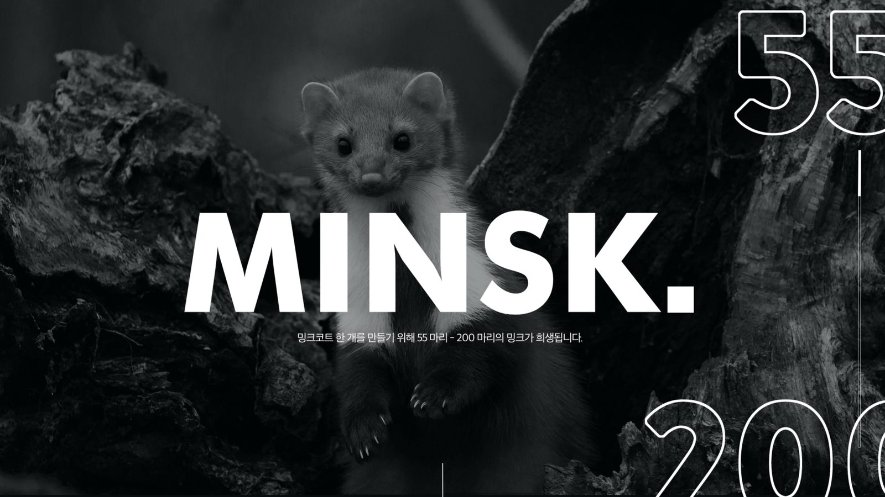
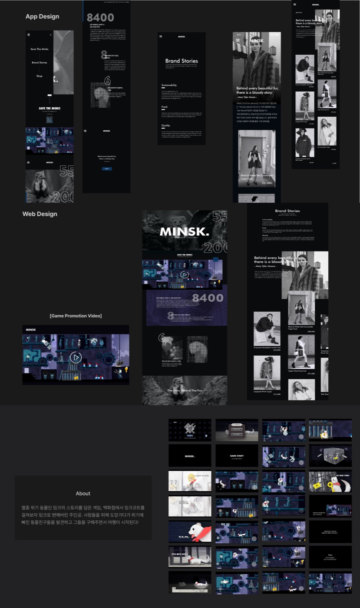
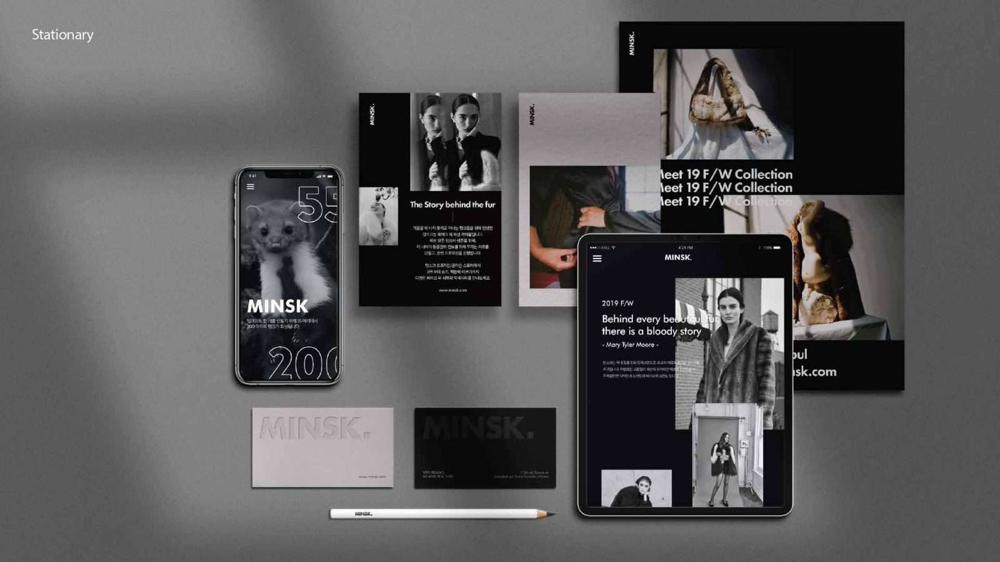

Minsk는 온/오프라인에서 페이크 퍼로 만든 의류와 액세서리를 판매하는 브랜드다. 단순히 대체 소재 제품을 파는 데서 그치지 않고, 소비자가 모피 소비 자체에 더 민감하게 반응하도록 만드는 것이 목표였다.
밍크코트 한 벌을 만들기 위해 55마리에서 200마리의 밍크가 희생된다.

리얼 모피 코트 소비는 줄고 페이크 퍼 수요는 늘고 있었지만, 여전히 코트 트리밍이나 액세서리에 쓰인 모피는 눈치채지 못하는 경우가 많았다.
모피 소비에 대한 불편한 진실을, 죄책감을 강요하지 않으면서 전달할 방법이 필요했다.
브랜드 캠페인이 정보 전달에 그치지 않고, 사람들이 스스로 찾아보고 공유하고 싶은 콘텐츠가 되어야 했다.
멸종 위기 동물인 밍크의 시점에서 이야기를 풀어가는 홍보용 게임을 기획했다. 백화점에서 밍크코트를 걸쳐보다 밍크로 변해버린 주인공이, 사람들을 피해 도망가며 위기에 빠진 동물 친구들을 구해주는 여정이다.

브랜드 메시지 정의 → 아이덴티티 디자인 → 앱/웹 디자인 → 게임 스토리·영상 제작까지, 졸업 작품으로 전 과정을 진행했다.
동물 학대라는 무거운 주제를 다루면서도, 사람들이 스스로 찾아보고 싶어지는 콘텐츠로 만드는 게 관건이었다. 죄책감을 강요하는 대신, 밍크의 시점에서 이야기를 따라가게 만든 게 이 캠페인의 핵심 선택이었다.
브랜드, 제품, 캠페인 영상까지 혼자 기획하면서, 메시지 하나가 여러 채널에서 일관되게 느껴지도록 만드는 게 왜 중요한지 체감했다.
졸업 작품에 머무르지 않고, 브랜드로서 실제 전시되고 시장에 진열되는 결과물까지 완성했다.
